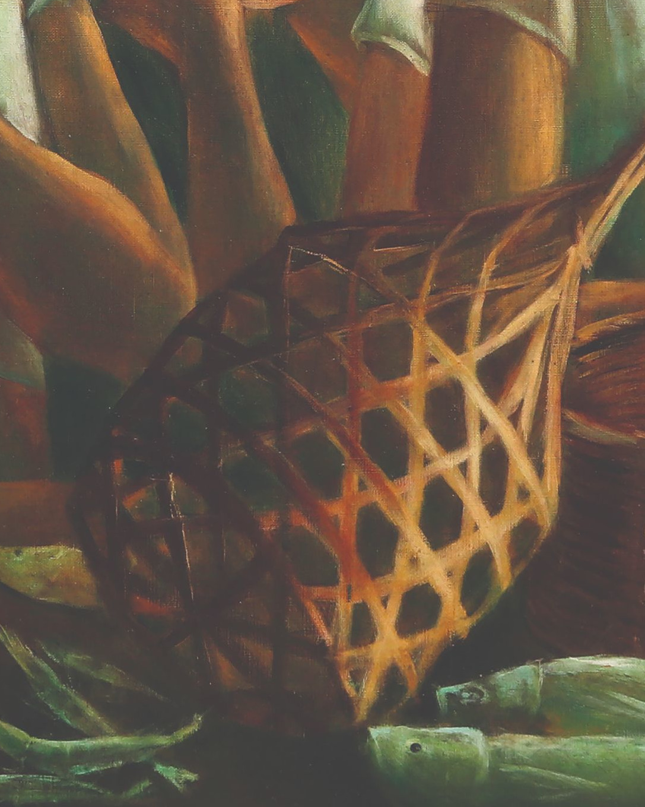

Anita Magsaysay-Ho was a Filipina painter who specialized in Social Realism and post-Cubism in regard to women in Filipino culture. Magsaysay-Ho's work appeals to Modernism by utilizing more abstract designs and styles rather than realistic approaches.


